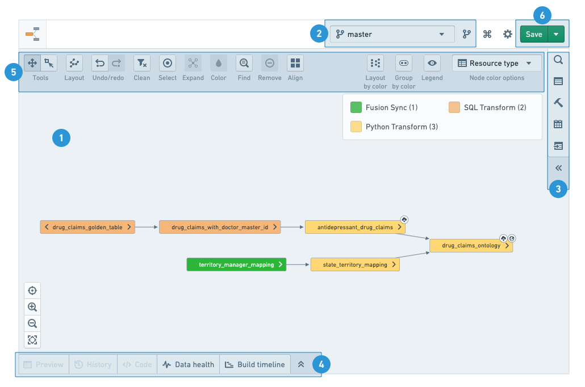

To make the best use of the Data Lineage application, you will need to know how to navigate the graphs, use tools, and configure branch and graph properties. The following numbered sections correspond to the numbers on the screenshot below:

The graph is your workspace for arranging and manipulating nodes as you explore your data pipeline.
After adding nodes to the graph, you can add their related resources by clicking on the arrows on either side of the node or by using the Expand option in the graph tools.
Nodes are arranged with auto-layout by default, but you can rearrange nodes manually by clicking and dragging them. To re-enable auto-layout, choose Layout all nodes under the Layout option in the graph tools.
Click and drag to pan around the graph when in the default Panning mode. To use the cursor to select multiple nodes, switch to Drag select mode in the graph tools or hold Shift while clicking and dragging. You can select a node by clicking it, or select multiple nodes with Ctrl/Cmd + click.
Select a branch from the list to explore data pipelines in that branch. The graph and any of the other helpers would show information based on the selected branch. If the branch does not exist for a resource, the listed fallback branches would be used instead (in the order they appear on the list).
To learn more about branching, see the branching documentation.
Use the search helper to find Foundry resources and add them to the graph. Use the free-text search or browse the tree to find resources. Add a resource by clicking on it or use the buttons at the bottom of the view to add all search results (including or excluding the content of sub-folders). Use the Advanced tab to add filters to your search and sort your results.
:::callout{theme="warning" title="Warning"} When viewing a folder with subfolders, you can recursively add all tables in all subfolders to the graph. Adding too many nodes at once may effect the graph's performance. :::
When you select a single node on the graph, the properties helper shows you the details of the resource. Depending on the type of resource you select, the properties helper shows available Foundry apps under the Actions menu and other links and actions (reporting issues, adding descriptions, etc.).
When you select multiple nodes on the graph, you will see the histogram helper. The helper displays common properties and their values alongside the number of appearances of each value on the graph. By clicking on the values, the matching nodes are highlighted. If you want to drill down to just those resources, click on Update selection.
:::callout{theme="success"} Use the Copy names button in the histogram to copy the names of all currently selected resources. The full names (including path) are copied to the clipboard as a comma-separated list. :::
The builds helper offers you three build strategies:
Learn more about managing builds.
The schedules helper allows you to set and edit build schedules for selected resources on the graph. Learn more about build schedules..
:::callout When viewing and creating schedules in Data Lineage, the schedules apply to the branches (including fallback branches) configured in the graph. :::
The related artifacts helper displays artifacts directly linked to the nodes selected on the graph. Deleted and automatically saved files are excluded from the list unless chosen otherwise. You can also get to the same list of related artifacts by hovering over the right arrow of each node on the graph.
Click on a node to see more details:
The graph tools provide a set of graph exploration, navigation, and customization capabilities:
You can color the nodes on your lineage graph by several properties and metrics. Node coloring is commonly used to communicate lineage structure, troubleshoot issues, monitor pipelines health, and manage builds. You can also create your own custom coloring and arrange the graph based on the colors you assigned.
Read more about node coloring options.
:::callout{theme="success"} You can arrange your nodes on the graph by color group under Layouts. :::
The layout button provide various arrangement option for the nodes on the graph. Layout all nodes applies automatic layout for all the nodes on the graphs. When you select multiple nodes on the graph, you can apply other layouts (vertical, hierarchical, by level, etc.).
:::callout{theme="success"} You can use various useful keyboard shortcuts in the lineage graph. View the full list under the Keyboard shortcuts button at the top right corner of the app. :::
Use the Expand tool to expose ancestors and descendants of nodes in the graph. Learn more about exploring data lineage..
Use Find to search for nodes on the graph. You can either search for the name of the node or column names in datasets.
The Selection tool allows you to easily select nodes on the graph:
You can save and share your lineage graph with other Foundry users in the following ways:
:::callout Your branch choice is saved with your saved graph. If you load a graph with a different branch configuration than you currently have, you will be asked if you would like to switch branches to the saved branch configuration. :::